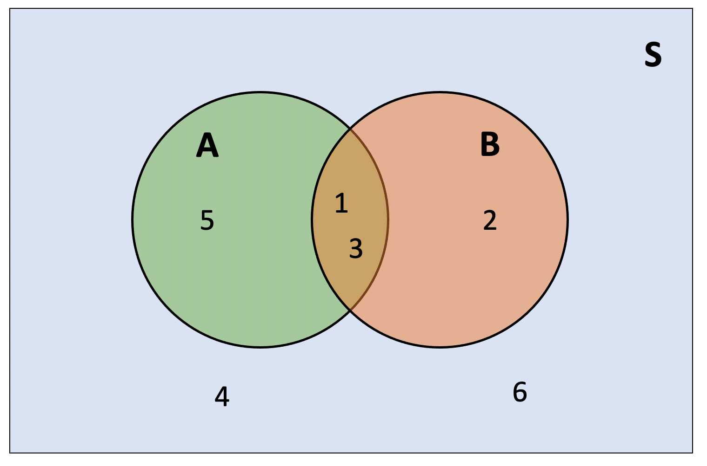
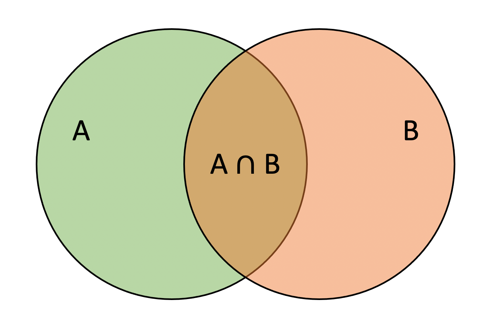
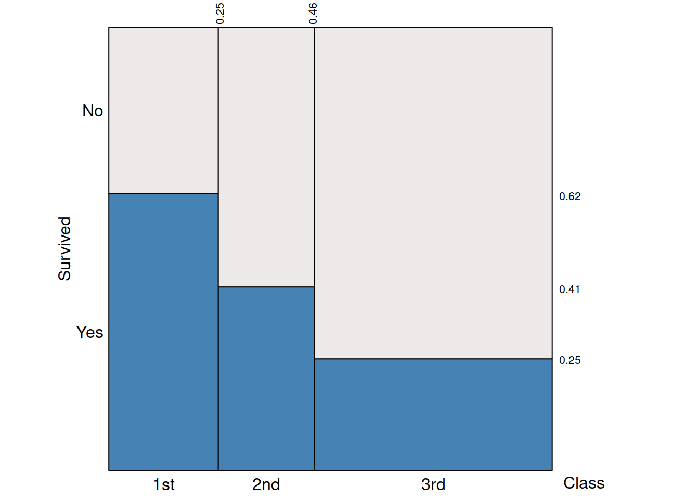
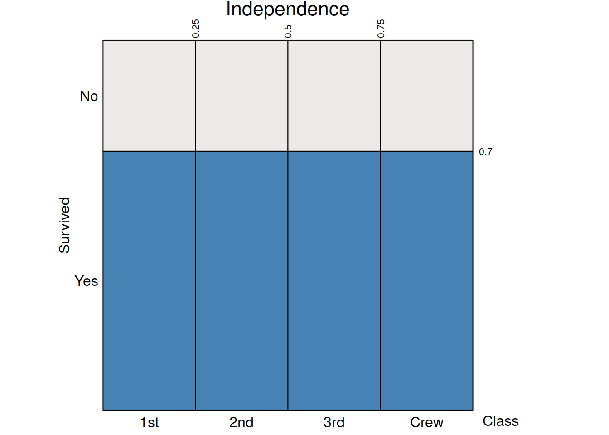
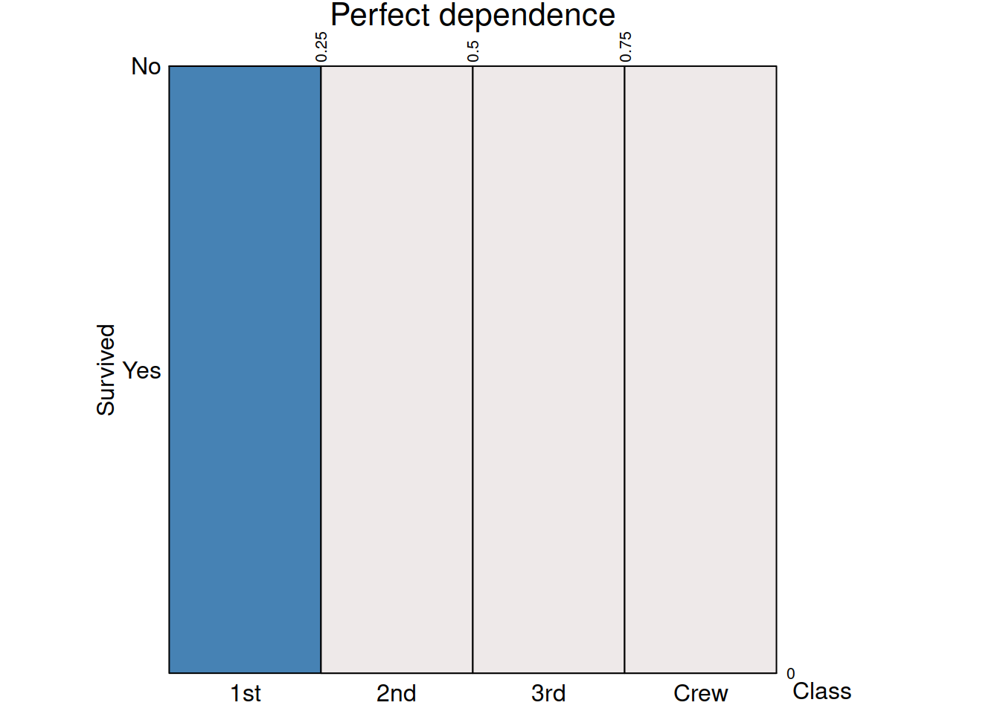

LEARNING OBJECTIVES
In this week’s exercises you will learn to apply the probability rules to compute the probability of any event, not just mutually exclusive or independent ones.
You will apply the rules of conditional probability to finish answering last week’s research question: “Can telling a joke affect whether or not a waiter in a coffee bar receives a tip from a customer?”
Let’s recap the probability rules discussed last week.
Rule 1: Probability assignment rule
The probability of an impossible event (an event which never occurs) is 0 and the probability of a certain event (an event which always occurs) is 1.
Hence, we have that the probability is a number between 0 and 1: \[\text{for any event }A, \\ 0 \leq P(A) \leq 1\]
Rule 2: Total probability rule
If an experiment has a single possible outcome, it is not random as that outcome will happen with certainty (i.e. probability 1).
When dealing with two or more possible outcomes, we need to be sure to distribute the entire probability among all of the possible outcomes in the sample space \(S\).
The sample space must have probability 1: \[P(S) = 1\]
It must be that the will observe one of the outcomes listed within the collection of all possible outcomes of the experiment.
Rule 3: Complement rule
If the probability of observing the face “2” in a die is 1/6 = 0.17, what’s the probability of not observing the face “2”? It must be 1 - 1/6 = 5/6 = 0.83.
If \(A = \{2\}\), the event not A is written \(\sim A\), which is a shortcut for \(S\) without \(A\), that is \(\{1, 3, 4, 5, 6\}\).
\[P(\sim A) = 1 - P(A)\]
Rule 4: Addition rule for disjoint events
Suppose the probability that a randomly picked person in a town is \(A\) = “a high school student” is \(P(A) = 0.3\) and that the probability of being \(B\) = “a university student” is \(P(B) = 0.5\).
What is the probability that a randomly picked person from the town is either a high school student or a university student? We write the event “either A or B” as \(A \cup B\), pronounced “A union B”.
If you said 0.8, because it is 0.3 + 0.5, then you just applied the addition rule: \[ \text{If }A \text{ and } B \text{ are mutually exclusive events,}\\ P(A \cup B) = P(A) + P(B) \]
Rule 5: Multiplication rule for independent events
We saw that probability of observing an even number (\(E\)) when throwing a die is 0.5.
You also know that the probability of observing heads (\(H\)) when throwing a fair coin is 0.5.
What’s the probability of observing an even number and heads (that is, \(E\) and \(H\), written \(E \cap H\)) when throwing both items together?
The rule simply says that in this case we multiply the two probabilities together: 0.5 * 0.5 = 0.25.
The multiplication rule for independent events says: \[ \text{If }A \text{ and } B \text{ are independent events,}\\ P(A \cap B) = P(A) \times P(B) \]
Consider throwing a six-sided die, for which we already know that the sample space is \(S = \{1, 2, 3, 4, 5, 6\}\). What’s the probability of observing an odd number or a number which is less than 4?
The relevant events are:
and we know that:
However, the probability of \(A\) or \(B\), written \(P(A \cup B)\), is not simply \(P(A) + P(B)\), because the events \(A\) and \(B\) are not disjoint; they overlap. The outcomes 1 and 3 play a crucial role here as they are both odd and are less than four, i.e. they are in both sets. They are both in \(A\) and \(B\), which places them in the intersection of the two circles.
The diagram below represents the sample space as \(S\). Notice that the outcomes 4 and 6 are neither odd nor less than four, so they sit outside both circles.

The reason we can’t simply add the probabilities of \(A\) and \(B\) is that we would count the outcomes 1 and 3 twice. If we did add the two probabilities, we could compensate by subtracting the probability of the outcomes 1 and 3.
\[ \begin{aligned} P(\text{odd or less than 4}) &= P(\text{odd}) + P(\text{less than 4}) - P(\text{odd and less than 4}) \\ &= P(\{1, 3, 5\}) + P(\{1, 2, 3\}) - P(\{1, 3\}) \\ &= 3/6 + 3/6 - 2/6 \\ &= 0.667 \end{aligned} \]
This is true in general and is called the general addition rule, which does not require disjoint events. Consider two generic events \(A\) and \(B\) such that

Then, the probability of observing \(A\) or \(B\) is: \[ P(A \cup B) = P(A) + P(B) - P(A \cap B) \]
Intuitively, \(P(A) + P(B)\) counts \(A \cap B\) twice, so we have to subtract \(P(A \cap B)\) to make the net number of times \(A \cap B\) is counted equal to 1.
When the two events have no outcomes in common, i.e. \(P(A \cap B) = 0\) as the two events can’t happen together, the general addition rule reduces to the addition rule for disjoint events.
TERMINOLOGY
Everyday language can be ambiguous. It’s not clear if by answering “yes” to the question above our choice is only one of the two options, or we can actually have both.
Typically, everyday language uses “or” meaning the exclusive version. That is, you can have one or the other, but not both. In other words, you can have fruit or dessert, but not both.
When talking about probability, being imprecise and ambiguous can get us into trouble. For this reason, we will here define once for all what we mean by “or” in a mathematical sense.
In statistics, when we say “or” we always mean the inclusive version. In other words, the probability of \(A\) or \(B\) means the probability of either \(A\) or \(B\) or both.
Let’s consider another example. Suppose that 25% of people have an electric scooter, 29% of people have a bike, and 12% of people own both. What is the probability that someone owns an electric scooter or a bike?
This question concerns the following two events
and we are told that
Clearly, \(A\) and \(B\) are not mutually exclusive (or disjoint) events. Having a scooter doesn’t exclude owning a bike, and vice versa. In fact, the problem statements tells us exactly the percentage of people having both an electric scooter and a bike, 12%.
So… how do we calculate the probability of owning an electric scooter or a bike?
If we simply did \(P(A) + P(B)\), we would count twice those having both a scooter and a bike. Hence, we need to subtract \(P(A \cap B)\): \[ \begin{aligned} P(A \cup B) &= P(A) + P(B) - P(A \cap B) \\ &= 0.25 + 0.29 - 0.12 \\ &= 0.42 \end{aligned} \]
The following contingency table displays the counts of passengers who did or did not survive the Titanic sinking by travelling class.
| Class | No | Yes | Total |
|---|---|---|---|
| 1st | 122 | 203 | 325 |
| 2nd | 167 | 118 | 285 |
| 3rd | 528 | 178 | 706 |
| Total | 817 | 499 | 1316 |
You already encountered contingency tables when studying the relationship between two categorical variables in week 4.
If you divide the frequency table by the total number of passengers, 1316, you obtain a table of relative frequencies. It is just a small step from these relative frequencies to probabilities.
Let;s focus on the Titanic survival study and make the sample space just the set of these 1316 passengers. If we select a passenger at random from this study, the probability we select a first class passenger is just the corresponding relative frequency (since we are equally likely to select any of the 1316 passengers). There are 325 first class passengers in the data out of a total of 1316, giving a probability of \[ P( \text{1st} ) = \frac{325}{1316} = 0.247 \] The same method works for more complicated events like intersections. For example, what’s the probability of selecting a 1st class passenger who survived? Well, 203 first class passengers survived, so the probability is \[ P( \text{1st} \cap \text{survived} ) = \frac{203}{1316} = 0.154 \]
The probability of selecting a passenger who survived is \[ P( \text{survived} ) = \frac{499}{1316} = 0.379 \] What if we are given the information that the selected passenger was in first class? Would that change the probability that the selected passenger survived? You bet it would!
When we restrict our focus to first class passengers, we look only at the row of the table where “Class” is “1st”. Of the 325 first class passengers, only 203 of them said survived. We write the probability that a selected passenger survived given that we have selected a first class passenger as \[ P(\text{survived} \mid \text{1st}) = \frac{203}{325} = 0.625 \]
Now, imagine dividing numerator and denominator by the total, 1316: \[ \begin{aligned} P(\text{survived} \mid \text{1st}) = \frac{203 / 1316}{325 / 1316} = \frac{P(\text{1st} \cap \text{survived})}{P(\text{1st})} \end{aligned} \]
A probability that takes into account a given condition, such as being a first class passenger, is called a conditional probability. For generic events \(A\) and \(B\), we write the conditional probability as \(P(B | A)\) and pronounce it “the probability of \(B\) given \(A\)”.
Suppose we are told that the event \(A\) with \(P(A) > 0\) occurs. The conditional probability of \(B\) given \(A\) is given by: \[ P(B | A) = \frac{P(A \cap B)}{P(A)} \] Intuitively, we need to divide the formula by \(P(A)\) to make sure that \(P(A|A) = 1\).
The formula wouldn’t work if \(P(A) = 0\), but this makes sense as \(A\) we couldn’t be told that \(A\) occurred if it was an impossible event!
NOTE
The conditional probability \(P(\text{some event} | A)\) satisfies the standard rules of probability. You can think of it as the same as \(P(\text{some event})\) but after having replaced the sample space from \(S\) to \(A\), which is the event that we have been told happened. As the event happened, we know that the new sample space is now \(A\), so that \(P(A) = 1\).
For example, according to the complement rule, \(P({}\sim B|A) = 1 - P(B|A)\).
Consider the following plot:

On the y-axis we see the conditional probabilities of survival given the passenger class. That is \(P(\text{survived} | \text{1st}) = 0.62\), \(P(\text{survived} | \text{2nd}) = 0.41\), and \(P(\text{survived} | \text{3rd}) = 0.25\).
The x-axis displays the probability of a randomly selected passenger to be in each travelling class. For example, \(P(\text{1st}) = 0.25\), \(P(\text{2nd}) = (0.46 - 0.25) = 0.21\), and \(P(\text{3rd}) = 1 - (P(\text{1st}) + P(\text{2nd})) = 1 - 0.25 - 0.21 = 1 - 0.46 = 0.54\)
Consider two generic events \(A\) and \(B\). Before, we saw that \[ P(B | A) = \frac{P(A \cap B)}{P(A)} \]
Rearranging the conditional probability formula we obtain the general multiplication rule: \[ P(A \cap B) = P(A) P(B|A) \]
If you were to start from \(P(A | B)\) you would reach to the equivalent version: \[ P(A \cap B) = P(B) P(A|B) \]
We say that two events \(A\) and \(B\) are independent, if knowing that one occurred doesn’t change the probability of the other occurring:
\[ P(B|A) = P(B) \]
From this we have that
\[ P(B) = P(B|A) = \frac{P(A \cap B)}{P(A)} \]
Leading to
\[ P(A \cap B) = P(A) P(B) \] At the same time,
\[ P(A|B) = \frac{P(A \cap B)}{P(B)} = \frac{P(A) P(B)}{P(B)} = P(A) \]
So, we have three equivalent definitions of independent events! If one holds, the remaining ones hold as well. Two events \(A\) and \(B\) are independent if and only if \[ \begin{aligned} P(A | B) &= P(A) \\ P(B | A) &= P(B) \\ P(A \cap B) &= P(A) P(B) \end{aligned} \]
In pictures:
Independence happens when the probability of “Survived = Yes” is the same regardless of whether the passenger was in 1st, 2nd, or 3rd class.

Perfect dependence happens when knowing the passenger class leads to a perfect prediction of whether a passenger survived or not.

Note that, for independent events \(A\) and \(B\) such that \(P(B | A) = P(B)\), the general multiplication rule reduces to the multiplication rule for independent events: \[ P(A \cap B) = P(B|A)P(A) = P(B) P(A) \]
Suppose we have \(P(A | B)\) but we are interested in \(P(B | A)\). That is, we want to reverse the conditioning.
By applying the rule for conditional probability and the general multiplication rule, we have that: \[ P(B | A) = \frac{P(A \cap B)}{P(A)} = \frac{P(A|B)P(B)}{P(A)} \]
Load the TipJoke.csv data into R and call it tipjoke.
Recode the Tip variable so that
Create a relative frequency table displaying how many customers who did or did not tip were given a joke card, an advertisement card, or no card.
Consider the 211 coffee-ordering customers as the population of reference. Use the previously created relative frequency table to answer the following questions.
If we choose a customer at random from this study,
what’s the probability of the customer getting a card and tipping?
what’s the probability of the customer getting a card or tipping?
Consider again the relative frequency table for the restaurant tipping study.
What’s the probability of a customer tipping?
What’s the probability of getting a tip given that the customer received an advertisement card?
What’s the probability of getting a tip given that the customer received a joke card?
What’s the probability of getting a tip given that the customer received no card?
Do you think that tipping is independent of whether you are given an ad, joke, or no card?
Based on your analysis above, would you suggest a waiter that telling customers a joke while handing out the bill would improve their chance of receiving a tip?
COVID-19 testing. It is now evident the need for rapidly available COVID-19 testing. However, the results of these tests are inherently governed by probability. Most people who have COVID-19 will test positive (true positives), while others will test negative (false negatives). Similarly, most people who do not have COVID-19 will test negative (true negatives), while others might test positive (false positives).
Define the following events:
\(T^+ = \text{the person tests positive}\)
\(T^- = {}\sim T^+ = \text{the person tests negative}\)
\(C^+ = \text{the person truly has COVID-19}\)
\(C^- = {}\sim C^+ = \text{the person does not have COVID-19}\)
This can be summarise according to the following table:
| +ve test (\(T^+\)) | -ve test (\(T^-\)) | |
|---|---|---|
| Has COVID-19 (\(C^+\)) | True Positives (TP) | False Negatives (FN) |
| Hasn’t COVID-19 (\(C^-\)) | False Positives (FP) | True Negatives (TN) |
Sensitivity and Specificity. Infectious disease researchers tend to rely on two different conditional probabilities when evaluating the usefulness of a diagnostic test:
The better a test is, the closer both of these probabilities will be to 1.
Define what sensitivity and specificity are using the notation for conditional probabilities.
Show how to calculate sensitivity and specificity when starting from a table of true positives, false positives, true negatives, and false negatives.
One recently approved COVID-19 test was created by Abbott Labs and advertises 97.1% sensitivity, and 98.5% specificity (in addition to a claim that its results are available within 15 minutes).
Suppose one person who has COVID-19 takes Abbott Labs’ 15-minute test. What is the probability they receive a negative test result (suggesting they do not have the disease)?
Suppose two people who have COVID-19 each take Abbott Labs’ 15-minute test.
Suppose two people who have COVID-19 each take Abbott Labs’ 15-minute test. Calculate the probability that both receive a negative test result (suggesting they do not have the disease). Show your work using proper notation.
Hint:
Define the events \(T_1^- = \text{individual 1 tests negative}\), \(T_2^- = \text{individual 2 tests negative}\), \(C_1^+ = \text{individual 1 has COVID-19}\), and \(C_2^+ = \text{individual 2 has COVID-19}\).
\(P(T_1^- \mid C_1^+ \cap C_2^+) = P(T_1^- \mid C_1^+)\) as the result of the test is independent of the fact that individual 2 has COVID-19.
\(P(T_2^- \mid C_1^+ \cap C_2^+) = P(T_2^- \mid C_2^+)\) as the result of the test is independent of the fact that individual 1 has COVID-19.
Use the two facts above to calculate \(P(T_1^- \cap T_2^- \mid C_1^+ \cap C_2^+)\)
Suppose two people who have COVID-19 each take Abbott Labs’ 15-minute test. Calculate the probability that at least one receives a negative test result (suggesting they do not have the disease). Show your work using proper notation.
Finally, suppose that 25 people who do not have COVID-19 each take Abbott Labs’ 15-minute test. Calculate the probability that at least one receives a positive test result. Show your work using proper notation.
Hint: Use the complement rule.
Prevalence. One issue with screening tests is that probabilities like sensitivity and specificity are conditional probabilities. That is, these probabilities are dependent upon a certain prior event (actually having COVID-19 or not). Infectious disease specialists call the probability of this prior event (actually having the disease) the prevalence. For example, if 10% of the population has COVID-19, we would say the prevalence is 10%.
Suppose 3% of the population of Scotland currently has COVID-19.
What is the probability that a randomly selected person (from Scotland) has the disease and tests positive?
What is the probability that a randomly selected person (from Scotland) does not have the disease and tests positive?
Suppose instead that 30% of the population of Scotland currently has COVID-19.
What is the probability that a randomly selected person (from Scotland) has the disease and tests positive?
What is the probability that a randomly selected person (from Scotland) does not have the disease and tests positive?
Gueaguen, N. (2002). The Effects of a Joke on Tipping When It Is Delivered at the Same Time as the Bill. Journal of Applied Social Psychology, 32(9), 1955-1963.↩︎